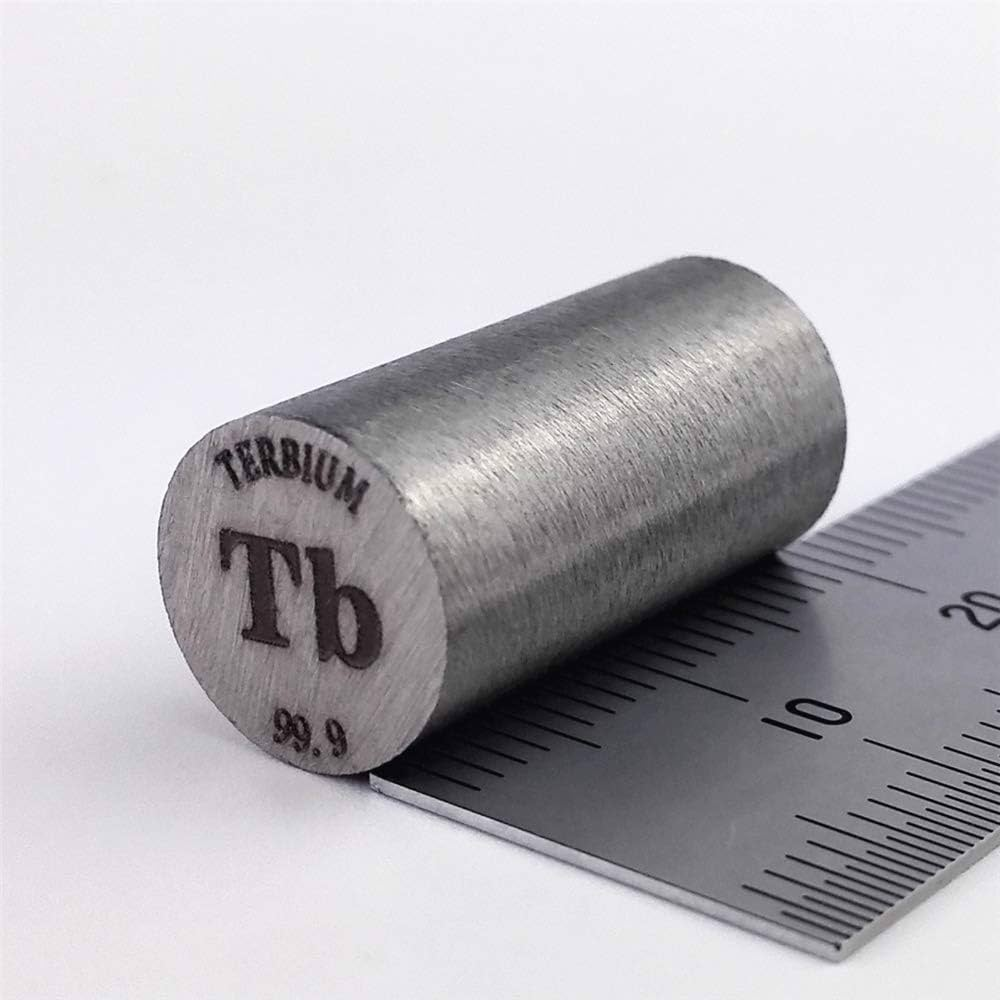

| Proprietà |
Valore |
| Nome Elemento |
Il Terbio (Tb) è un elemento chimico che fa parte della serie dei lantanidi, conosciuti anche come terre rare. |
| Massa Atomica |
158,9 u |
| Numero Atomico |
65 |
| Numero di Isotopi |
36 isotopi conosciuti |
| Numero di Massa (Isotopi) |
135-171 (Terbio-159 è l’unico stabile) |
| Temperatura di Fusione |
1356 °C |
| Temperatura di Ebollizione |
3230 °C |
| Densità |
8,27 g/cm³ |
| Elettronegatività |
1,2 (Scala di Pauling) |
| Anno di Scoperta |
1843 (Carl Gustaf Mosander) |
| Abbondanza |
1,2 ppm (parti per milione) |
| Caratteristiche |
- Metallo argentato, lucido e morbido.
- Parte del gruppo dei lantanidi.
- Stabile all’aria, può ossidare formando ossido protettivo.
- Reagisce con acidi per formare sali.
- Proprietà magnetiche uniche, usato in materiali avanzati.
|
| Applicazioni Tecnologiche |
- Fosfori nei display a colori.
- Magneti ad alte prestazioni.
- Laser e dispositivi ottici.
- Reattori nucleari.
- Convertitori catalitici e materiali per energia pulita.
|
| Localizzazione Giacimenti |
- Cina: Mongolia interna, Bayan Obo.
- USA: Miniera di Mountain Pass (California).
- Australia: Mount Wield.
- Svezia: giacimenti recenti.
- Africa: Sudafrica e Madagascar.
|
| Effetti sulla Salute |
Leggermente tossico se ingerito, irritante per pelle e occhi. |
| Effetti sull’Ambiente |
L’estrazione può generare contaminazione radioattiva e tossica. |
